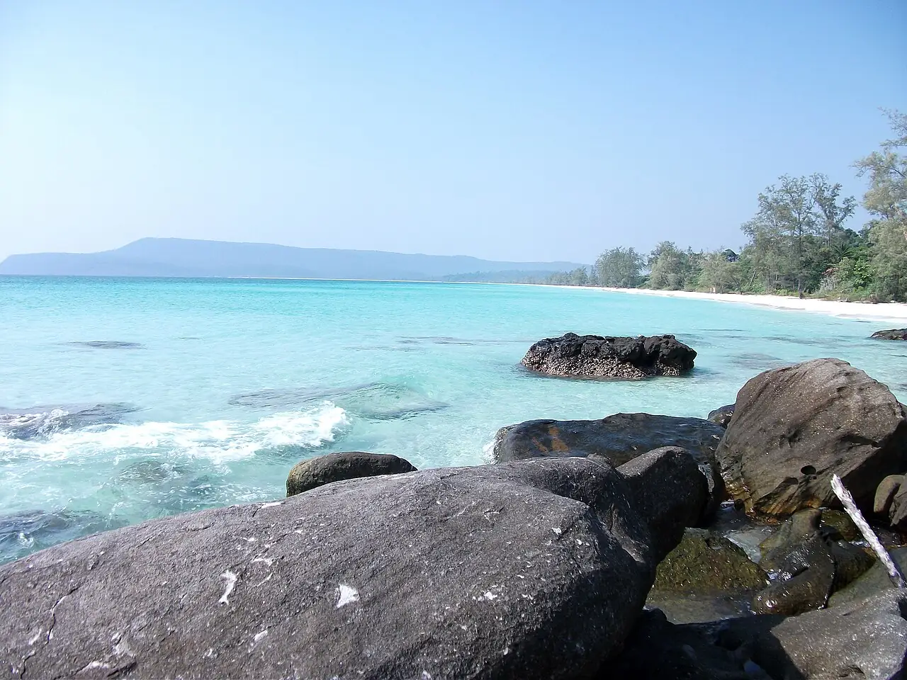

Sok San — Koh Rong
Preah Sihanouk, Cambodge · baignade, snorkeling

Longue plage de sable blanc sur la côte ouest de Koh Rong, loin de l’animation de Koh Touch. L’eau est calme en saison sèche et les rochers des extrémités se prêtent au snorkeling.
- Lieu
- Preah Sihanouk, Cambodge
- Niveau
- Débutant
- Activités
- baignade, snorkeling
- Type d'eau
- Mer / océan
- Coordonnées
- 10.69, 103.25 (position approximative du secteur)
Dangers à connaître
- Méduses possibles : un lycra aide.
- Soins médicaux limités sur l’île.
Le conseil d'Ocean Buddy
Viens de novembre à avril : pendant la mousson de sud-ouest, la mer se forme et les traversées sont plus agitées.
Ouvrir dans Ocean Buddy Télécharger sur l'App Store
Source : Fiche Ocean Buddy · septembre 2026 · à vérifier localement.